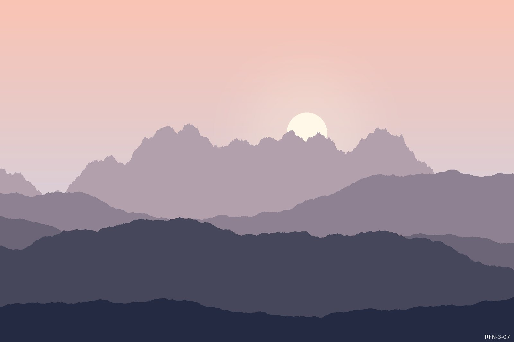
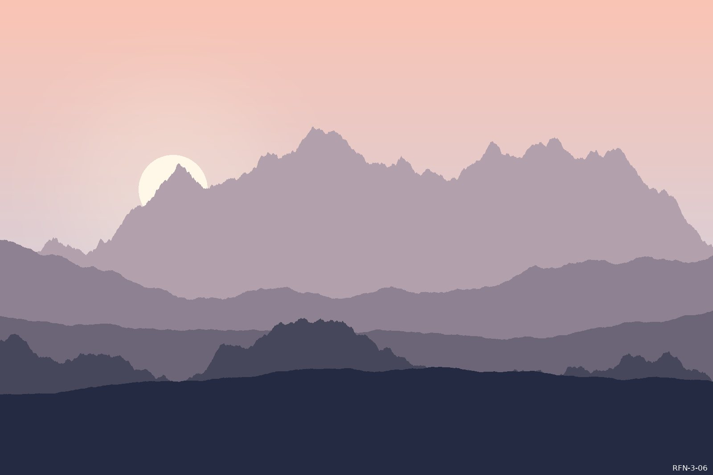

Before the pass closes
Back at camp the light went blue and then grey, and the only thing left to do was cook, check the cards and plan the next morning's route.

Fog is unpredictable here. Some mornings it sits below the cliffs like a second ocean; other mornings it swallows everything and there is nothing to photograph but the sound of the surf.
Most of the frames from this trip were made within twenty minutes of sunrise. After that the light flattens out and the ridges lose their layers, so the rest of the day goes to scouting.

The river changes course every spring. Gravel bars that were islands last year are now part of the bank, and the channels braid differently every visit.
Night shooting means long exposures, cold fingers and a lot of waiting. The moon came over the ridge at 21:40 and lit the snowfield for almost an hour.